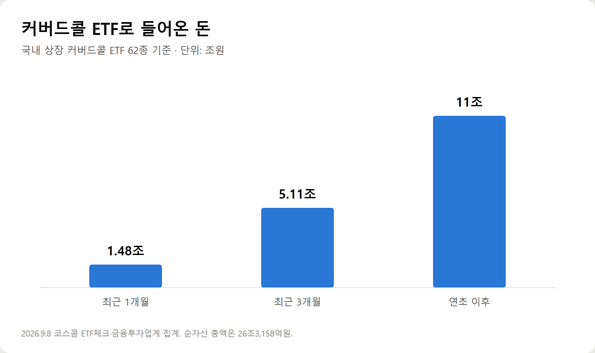
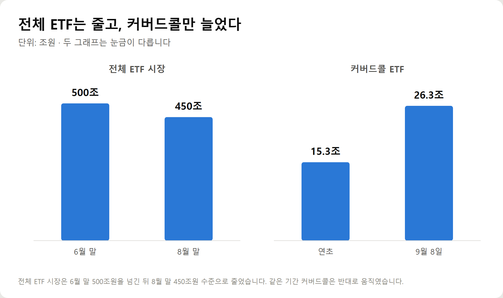
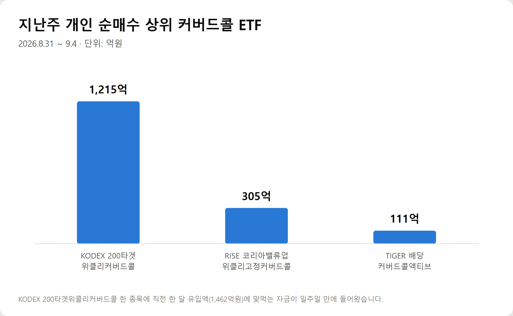
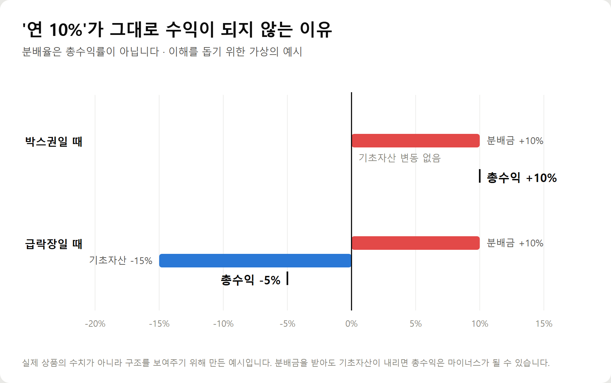

<meta charset="utf-8">
<title>커버드콜 ETF 한 달 1.5조 유입 — 연 10% 분배율의 진짜 의미 — 나의 투자 그리고 행복한 여행</title>
<meta name="description" content="커버드콜 ETF 62종 순자산 26조3158억원, 한 달 1조4754억원 유입. 연 10% 분배율의 구조와 분배율의 함정, 세금과 절세계좌까지 정리했습니다.">
<meta name="viewport" content="width=device-width, initial-scale=1">
<link rel="canonical" href="https://danielmoon82.github.io/moon/posts/covered-call-etf-2026-09-09.html">
<link rel="preconnect" href="https://fonts.googleapis.com">
<link rel="preconnect" href="https://fonts.gstatic.com" crossorigin>
<link rel="stylesheet" href="https://fonts.googleapis.com/css2?family=Hahmlet:wght@400;600;800&family=IBM+Plex+Mono:wght@400;500&family=IBM+Plex+Sans+KR:wght@300;400;500;600&display=swap">

<style>
  :root{
    --paper:#E7EBF1;--surface:#F4F6FA;--surface-2:#DCE2EC;
    --ink:#0F1729;--ink-2:#3D4A63;--ink-3:#6B7891;
    --line:#C6CEDB;--line-soft:#D6DCE6;--accent:#B06A15;--accent-bright:#C2761A;
    --up:#E5484D;--down:#3B82F6;
    --f-display:"Hahmlet",'Nanum Myeongjo',"Apple SD Gothic Neo",serif;
    --f-body:"IBM Plex Sans KR","Apple SD Gothic Neo","Malgun Gothic",sans-serif;
    --f-mono:"IBM Plex Mono","SFMono-Regular",Consolas,monospace;
    --pad:clamp(20px,5vw,64px);
  }
  @media (prefers-color-scheme:dark){
    :root:not([data-theme="light"]){
      --paper:#0B1120;--surface:#121A2C;--surface-2:#1A2439;
      --ink:#E9EEF7;--ink-2:#A9B5C9;--ink-3:#72809A;
      --line:#26314A;--line-soft:#1D2739;--accent:#E8A33D;--accent-bright:#F0B45C;
    }
  }
  *{box-sizing:border-box;}
  body{margin:0;background:var(--paper);color:var(--ink);font-family:var(--f-body);
    font-weight:300;font-size:1rem;line-height:1.75;-webkit-font-smoothing:antialiased;}
  a{color:inherit;}
  img{max-width:100%;height:auto;}
  .wrap{max-width:760px;margin:0 auto;padding-inline:var(--pad);}
  .nav{position:sticky;top:0;z-index:20;background:color-mix(in srgb,var(--paper) 88%,transparent);
    backdrop-filter:saturate(180%) blur(12px);border-bottom:1px solid var(--line);}
  .nav-in{display:flex;align-items:center;justify-content:space-between;height:58px;}
  .brand{font-family:var(--f-display);font-weight:600;font-size:1rem;letter-spacing:-.02em;text-decoration:none;}
  .back{font-family:var(--f-mono);font-size:.72rem;color:var(--ink-3);text-decoration:none;}
  .article{padding-block:clamp(40px,7vw,72px) clamp(56px,9vw,96px);}
  .eyebrow{font-family:var(--f-mono);font-size:.68rem;letter-spacing:.16em;text-transform:uppercase;
    color:var(--accent);margin:0 0 14px;}
  h1{font-family:var(--f-display);font-weight:800;font-size:clamp(1.6rem,4.4vw,2.3rem);
    line-height:1.3;letter-spacing:-.03em;margin:0 0 16px;}
  .byline{font-family:var(--f-mono);font-size:.72rem;color:var(--ink-3);
    padding-bottom:24px;border-bottom:1px solid var(--line);margin-bottom:32px;}
  h2{font-family:var(--f-display);font-weight:600;font-size:1.25rem;letter-spacing:-.02em;margin:42px 0 14px;}
  h3{font-family:var(--f-display);font-weight:600;font-size:1.05rem;letter-spacing:-.02em;
    margin:30px 0 10px;padding-top:14px;border-top:1px solid var(--line-soft);}
  h3 .code{font-family:var(--f-mono);font-size:.7rem;font-weight:400;color:var(--ink-3);margin-left:6px;}
  p{margin:0 0 18px;color:var(--ink-2);}
  ul.checks{margin:0 0 18px;padding-left:20px;color:var(--ink-2);}
  ul.checks li{margin-bottom:8px;font-size:.94rem;}
  table{width:100%;border-collapse:collapse;font-size:.88rem;margin-bottom:8px;}
  th{font-family:var(--f-mono);font-size:.66rem;letter-spacing:.06em;text-transform:uppercase;
    color:var(--ink-3);text-align:right;padding:8px 6px;border-bottom:1px solid var(--line);}
  th:first-child{text-align:left;}
  td{padding:10px 6px;border-bottom:1px solid var(--line-soft);color:var(--ink-2);}
  td.num{font-family:var(--f-mono);text-align:right;font-variant-numeric:tabular-nums;}
  td.up{color:var(--up);} td.down{color:var(--down);}
  .scroll{overflow-x:auto;}
  figure{margin:22px 0;}
  figure img{display:block;border-radius:3px;background:var(--surface-2);}
  figcaption{margin-top:8px;font-family:var(--f-mono);font-size:.68rem;color:var(--ink-3);text-align:center;}
  .note{margin-top:34px;padding:16px 18px;border-left:3px solid var(--accent);
    background:var(--surface);border-radius:0 3px 3px 0;}
  .note p{margin:0;font-size:.85rem;color:var(--ink-3);}
  .foot{border-top:1px solid var(--line);background:var(--surface);padding-block:30px 38px;}
  .foot p{margin:0;font-size:.8rem;color:var(--ink-3);}
</style>

<nav class="nav">
  <div class="wrap nav-in">
    <a class="brand" href="../index.html">나의 투자 그리고 행복한 여행</a>
    <a class="back" href="../index.html#stocks">← 시황으로</a>
  </div>
</nav>

<main class="wrap article">
  <p class="eyebrow">Market</p>
  <h1>커버드콜 ETF 한 달 1.5조 유입 — 인컴형으로 갈아탄 개인들</h1>
  <p class="byline">투자 · 2026-09-09 기준</p>

  <p>한 줄 요약: 전체 ETF 시장은 6월 말 500조에서 8월 말 450조로 줄었는데, 커버드콜 ETF에만 한 달 1조4,754억원이 들어왔습니다.</p>
  <p>코스피가 박스권에 갇히고 9월 계절성 우려가 겹치자, 개인 자금이 방향성 베팅에서 현금흐름 쪽으로 옮겨간 결과입니다.</p>
  <p>이 글은 2026년 9월 8~9일 기준으로 확인 가능한 숫자만 모아 커버드콜 ETF의 구조와 위험을 정리한 기록입니다.</p>
  <h2>1. 지금 어떤 일이 벌어지고 있나</h2>
  <p>2026년 9월 8일 기준, 국내 상장 커버드콜 ETF 62종의 순자산 총액은 26조3,158억원입니다. 연초 이후 11조원 이상 늘었습니다.</p>
  <p>유입 속도가 특히 가팔라진 것은 최근입니다. 최근 3개월간 5조1,100억원, 그중 최근 한 달에만 1조4,754억원이 들어왔습니다.</p>
  <figure><figcaption>커버드콜 ETF 기간별 자금 유입 (단위: 조원)</figcaption></figure>
  <p>이 흐름이 눈에 띄는 이유는 전체 시장이 반대로 움직였기 때문입니다.</p>
  <p>국내 전체 ETF 시장은 지난 6월 말 사상 최고치인 500조원을 돌파했지만, 8월 말에는 450조원 수준까지 줄었습니다.</p>
  <figure><figcaption>전체 ETF 시장은 감소, 커버드콜은 증가</figcaption></figure>
  <p>개인투자자 흐름도 같은 이야기를 합니다. 9월 1일부터 7일까지 개인은 국내 상장 ETF를 163억원어치 순매도했습니다. 2023년 12월 이후 32개월 연속 이어지던 월간 순매수 행진이 멈춘 것입니다.</p>
  <p>8월만 해도 개인은 국내 ETF를 2조3,756억원어치 사들였습니다. 매수 강도가 확연히 꺾인 상황에서, 커버드콜만 반대 방향으로 움직이고 있습니다.</p>
  <h2>2. 커버드콜 ETF는 무슨 상품인가</h2>
  <p>이름이 어렵지만 구조는 단순합니다.</p>
  <p>기초자산(예: 코스피200, 나스닥100, 반도체 지수)을 보유한 상태에서, 그 자산을 미리 정한 가격에 살 수 있는 권리(콜옵션)를 다른 사람에게 팔아넘깁니다.</p>
  <p>권리를 팔았으니 대가를 받습니다. 이 대가를 옵션 프리미엄이라고 하고, 운용사는 이것을 재원으로 매달 분배금을 지급합니다.</p>
  <div class="note"><p>즉 커버드콜 ETF의 분배금은 기업이 벌어서 나눠주는 배당이 아니라, 상승 여지를 팔아 받은 값입니다.</p></div>
  <p>그래서 성격이 이렇게 갈립니다.</p>
  <ul class="checks">
    <li>지수가 박스권이거나 완만하게 오를 때 — 프리미엄을 꾸준히 챙길 수 있어 유리합니다</li>
    <li>지수가 급등할 때 — 미리 팔아둔 권리 때문에 상승분이 일정 수준에서 잘립니다</li>
    <li>지수가 급락할 때 — 하락은 그대로 떠안습니다. 프리미엄은 완충재일 뿐 방패가 아닙니다</li>
  </ul>
  <p>실제로 최근 코스피가 박스권에 머무는 동안 'KODEX 반도체타겟위클리커버드콜', 'FOCUS AI반도체위클리커버드콜액티브' 같은 상품은 월간 19~20% 수준의 수익률을 기록하기도 했습니다.</p>
  <p>이 구조가 잘 맞아떨어졌을 때의 모습입니다. 반대 국면에서는 반대로 나타납니다.</p>
  <h2>3. 왜 하필 지금 몰릴까</h2>
  <p>두 가지가 겹쳤습니다.</p>
  <p>첫째, 9월은 통계적으로 약한 달입니다. 한국거래소 집계에 따르면 2000년부터 2026년 8월까지 코스피의 9월 평균 수익률은 -0.68%로 연중 최하위입니다.</p>
  <p>추석 연휴를 앞둔 관망세와 3분기 실적 발표 전 불확실성이 겹치는 시기이기 때문입니다.</p>
  <p>둘째, 변동성이 커졌습니다. 시장의 불안 심리를 반영하는 코스피200 변동성지수(VKOSPI)는 42선 안팎으로, 1년 전보다 두 배 이상 높아진 상태입니다.</p>
  <p>참고로 9월 8일 코스피는 전 거래일보다 40.87포인트(0.58%) 내린 6,954.52로 마감했습니다.</p>
  <p>방향을 맞히기 어려운 국면에서는, 방향을 맞히지 않아도 되는 상품이 매력적으로 보입니다. 커버드콜이 '피난처'로 불리는 이유입니다.</p>
  <h2>4. 돈은 구체적으로 어디로 갔나</h2>
  <p>쏠림은 특정 상품에 집중됐습니다.</p>
  <figure><figcaption>2026년 8월 31일~9월 4일 개인 순매수 상위 커버드콜 ETF</figcaption></figure>
  <p>지난주(8월 31일~9월 4일) 'KODEX 200타겟위클리커버드콜' 한 종목에 개인 순매수 자금만 1,215억원이 몰렸습니다. 직전 한 달간 유입액(1,462억원)에 맞먹는 규모가 일주일 만에 들어온 것입니다.</p>
  <p>같은 기간 'RISE 코리아밸류업위클리고정커버드콜'에 305억원, 'TIGER 배당커버드콜액티브'에 111억원이 들어왔습니다.</p>
  <p>해외 지수형도 커지고 있습니다. 'KODEX 미국나스닥100데일리커버드콜OTM'은 순자산 1조원을 넘어섰고, 연초 이후 개인 순매수만 5,302억원으로 집계됐습니다.</p>
  <p>이 상품은 잔존 만기 하루짜리 외가격(OTM) 콜옵션을 매 영업일 매도하는 방식입니다. 행사가격을 당일 지수보다 약 1% 높게 잡아, 하루 1% 안팎의 상승분은 챙기면서 프리미엄도 함께 받는 구조입니다.</p>
  <p>한편 반도체 레버리지 ETF 같은 고위험 성장 테마 상품에서는 개인이 대거 차익 실현에 나섰습니다. 대신 'TIGER 미국S&amp;P500', 'KODEX 미국나스닥100' 같은 미국 대표지수 ETF와 초단기 채권·기업어음(CP)에 투자하는 파킹형 ETF로 옮겨갔습니다.</p>
  <h2>5. '연 10%'를 그대로 믿으면 안 되는 이유</h2>
  <p>여기가 이 글에서 가장 중요한 부분입니다.</p>
  <p>일반 배당주 ETF의 분배율이 연 3~5% 수준인 데 비해 커버드콜은 연 10% 안팎을 제시합니다. 숫자만 보면 두세 배입니다.</p>
  <p>하지만 분배율과 총수익률은 다른 개념입니다.</p>
  <figure><figcaption>분배금을 받아도 총수익은 마이너스가 될 수 있습니다</figcaption></figure>
  <p>분배금을 연 10% 받아도 그 사이 기초자산이 15% 내렸다면, 손에 남는 것은 마이너스입니다. 커버드콜 상품은 원금이 보장되지 않고, 시장이 급락하면 지수 하락 손실을 그대로 떠안습니다.</p>
  <p>여기에 하나 더 주의할 것이 이른바 '분배율의 함정'입니다.</p>
  <div class="note"><p>분배율은 보통 '분배금 ÷ 기준가격'으로 계산합니다. 주가가 내려 순자산가치가 줄어들면, 분배금이 그대로여도 분배율 숫자는 오히려 높아 보입니다.</p></div>
  <p>즉 분배율이 높아졌다는 것이 상품이 좋아졌다는 뜻이 아닐 수 있습니다. 기초자산이 빠졌다는 신호일 수도 있습니다.</p>
  <p>업계 관계자도 "단순히 제시된 월 분배율 숫자만 볼 것이 아니라, 기초자산의 변동성과 옵션 운용 방식, 원금 변동을 합산한 총투자수익률을 꼼꼼히 따져보고 진입해야 한다"고 조언합니다.</p>
  <h2>6. 세금은 어떻게 되나 — 절세계좌가 핵심인 이유</h2>
  <p>커버드콜 ETF의 분배금은 배당소득으로 과세됩니다. 일반 계좌에서 받으면 15.4%가 원천징수되고, 금융소득이 연 2,000만원을 넘으면 금융소득종합과세 대상이 됩니다.</p>
  <p>매달 분배금을 받는 구조이기 때문에, 규모가 커질수록 세금 부담이 눈에 띄게 커집니다.</p>
  <p>그래서 이 상품은 절세계좌와 함께 쓰는 경우가 많습니다.</p>
  <ul class="checks">
    <li>ISA(개인종합자산관리계좌) — 계좌 내 순이익에 대해 일정 한도까지 비과세, 초과분은 분리과세</li>
    <li>연금저축·IRP — 인출 시점까지 과세를 미루는 과세이연, 연금으로 받을 때 낮은 세율 적용</li>
  </ul>
  <p>실제로 커버드콜 투자가 일반 투자자에게 빠르게 확산된 배경에도 이 절세 효과가 있습니다.</p>
  <p>다만 계좌마다 납입 한도와 인출 조건이 다르고, 연금계좌는 중도 인출 시 불이익이 있습니다. 본인 상황에 맞는지 확인하고 쓰는 것이 좋습니다.</p>
  <h2>7. 고르기 전 확인할 다섯 가지</h2>
  <p>월배당 ETF는 이미 191개까지 늘었습니다. 전체 ETF 1,163개의 16.4%에 해당합니다. 2022년 6월 첫 상품이 나온 지 4년여 만입니다.</p>
  <p>숫자가 많아진 만큼 고르는 기준이 필요합니다.</p>
  <ul class="checks">
    <li>① 분배금의 재원 — 배당주형(배당금), 채권형(이자), 리츠형(임대수익), 커버드콜형(옵션 프리미엄) 중 무엇인지</li>
    <li>② 총수익률 — 분배율이 아니라 분배금과 주가 변동을 합친 수치를 봅니다</li>
    <li>③ 기초자산 — 코스피200인지 나스닥100인지 반도체인지에 따라 위험이 완전히 다릅니다</li>
    <li>④ 옵션 매도 비중 — 비중이 높을수록 분배금은 커지고 상승 참여는 줄어듭니다</li>
    <li>⑤ 계좌 — 일반계좌인지 ISA·연금저축인지에 따라 세후 수익이 달라집니다</li>
  </ul>
  <p>④번은 특히 상품마다 편차가 큽니다. 예를 들어 'SOL 국제금커버드콜액티브'는 옵션 매도 비중을 제한해 금 가격 상승에 90% 이상 참여하도록 설계했고, 그만큼 연 분배율은 4.38% 수준입니다.</p>
  <p>분배율이 낮은 대신 상승 참여율이 높은 것입니다. 분배율이 높다고 좋은 상품, 낮다고 나쁜 상품이 아니라는 뜻입니다.</p>
  <h2>8. 이런 사람에게 맞고, 이런 사람에겐 안 맞는다</h2>
  <p>맞는 경우입니다.</p>
  <ul class="checks">
    <li>은퇴 전후로 매달 들어오는 현금흐름이 필요한 경우</li>
    <li>지수가 크게 오르지도 내리지도 않을 것으로 보는 경우</li>
    <li>ISA·연금저축 등 절세계좌 여력이 남아 있는 경우</li>
  </ul>
  <p>맞지 않는 경우입니다.</p>
  <ul class="checks">
    <li>상승장에서 지수만큼 수익을 내고 싶은 경우 — 상방이 잘립니다</li>
    <li>원금 손실을 감당하기 어려운 경우 — 예금이 아닙니다</li>
    <li>분배율 숫자만 보고 고르려는 경우 — 가장 위험한 접근입니다</li>
  </ul>
  <h2>자주 묻는 질문</h2>
  <p>Q. 커버드콜 ETF는 예금처럼 안전한가요?</p>
  <p>아닙니다. 원금이 보장되지 않습니다. 시장이 급락하면 지수 하락분을 그대로 반영합니다. 매달 분배금이 나온다는 점 때문에 예금처럼 느껴질 수 있지만 성격이 전혀 다릅니다.</p>
  <p>Q. 분배율이 높은 상품이 더 좋은 상품인가요?</p>
  <p>그렇게 보기 어렵습니다. 분배율은 분배금을 기준가격으로 나눈 값이라, 기준가격이 내려가면 분배율은 올라간 것처럼 보입니다. 분배율 대신 총수익률을 봐야 합니다.</p>
  <p>Q. 커버드콜 ETF는 상승장에서 어떻게 되나요?</p>
  <p>미리 팔아둔 콜옵션 때문에 상승분이 일정 수준에서 제한됩니다. 지수가 크게 오를수록 일반 지수 ETF와 격차가 벌어집니다.</p>
  <p>Q. 세금은 얼마나 내나요?</p>
  <p>분배금은 배당소득으로 15.4%가 원천징수됩니다. 금융소득이 연 2,000만원을 넘으면 금융소득종합과세 대상이 됩니다. ISA나 연금저축·IRP를 활용하면 비과세 또는 과세이연 혜택을 받을 수 있습니다.</p>
  <p>Q. 지금 들어가도 되나요?</p>
  <p>시점보다 구조가 먼저입니다. 이 상품은 지수가 박스권일 때 유리하고 급등장에서 불리한 구조입니다. 앞으로의 장을 어떻게 보는지에 따라 답이 달라지며, 어느 쪽이든 투자 판단과 책임은 본인에게 있습니다.</p>
  <h2>정리하면</h2>
  <p>전체 ETF 시장에서 돈이 빠지는 동안 커버드콜 ETF에는 한 달 1조4,754억원이 들어왔습니다. 순자산은 26조3,158억원까지 불어났습니다.</p>
  <p>배경은 분명합니다. 9월 평균 수익률 -0.68%라는 계절적 부진과 VKOSPI 42선의 높은 변동성 앞에서, 방향을 맞히지 않아도 되는 상품을 찾은 것입니다.</p>
  <p>다만 '연 10%'는 수익률이 아니라 분배율입니다. 분배금을 받는 동안 기초자산이 빠지면 총수익은 마이너스가 될 수 있고, 주가가 내리면 분배율 숫자는 오히려 높아 보입니다.</p>
  <p>그래서 확인할 것은 결국 세 가지입니다. 분배금의 재원이 무엇인지, 총수익률이 얼마인지, 그리고 어떤 계좌에서 담을 것인지.</p>
  <p>숫자가 커 보일수록 구조를 먼저 보는 편이 안전합니다.</p>
  <div class="note"><p>이 글은 공개된 보도자료와 시장 데이터를 정리한 것으로 특정 상품의 매수·매도를 권유하지 않습니다. 투자 판단과 그에 따른 손실의 책임은 투자자 본인에게 있습니다.</p></div>
  <p>※ 본문 수치는 2026년 9월 8~9일 보도 기준이며, 코스콤 ETF체크·한국거래소·한국예탁결제원 집계를 인용한 언론 보도를 근거로 작성했습니다. 분배율과 순자산은 시점에 따라 달라집니다.</p>
</main>

<footer class="foot">
  <div class="wrap"><p>나의 투자 그리고 행복한 여행 · 투자 판단의 참고 자료일 뿐, 매수·매도를 권유하지 않습니다.</p></div>
</footer>
